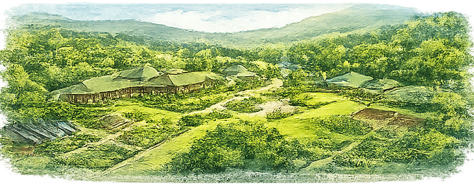
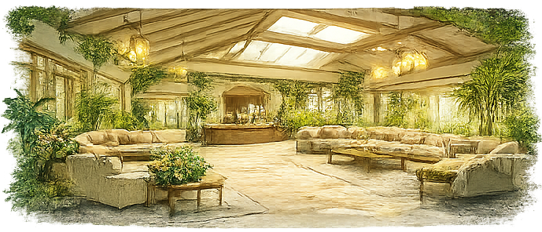

AKANY MAHATSARA
Reconnecter l’humain à l’Essentiel

Reconnecter l’humain à l’Essentiel


Littéralement : Akany signifie « Foyer » : qui accueille, nourrit et rassemble, où l’on grandit et Mahatsara signifie « Qui rend bien » : un lieu chaleureux qui fait évoluer, sans jamais imposer quoi que ce soit.
Le nom raconte déjà une histoire. Le message est complet.
Implanté dans la nature, le lieu reconnecte l’humain à l’Essentiel pour qu’il avance sur son propre chemin.
Akany Mahatsara est l’expression d’une conviction simple : un lieu vivant, enraciné dans son époque, où la nature est à la fois décor et partenaire, où le luxe se mesure en authenticité, où le confort naît de l’harmonie et où le rythme respecte les éléments.
Ici, l’humain dialogue avec son environnement pour se sentir pleinement à sa place.
L’esprit du lieu se révèle à travers différentes activités favorisant la qualité de vie, dans un cadre empreint de calme et de beauté.
Un espace privé est dédié au recueillement, à l’étude et à la réflexion, offrant à chacun les conditions propices au travail sur soi, à la progression intérieure et à la transformation personnelle.
Le lieu vise une autonomie maximale dans le respect absolu de l’environnement.
L’objectif est plus philosophique qu’écologique : maintenir une relation harmonieuse avec le Vivant.
Des solutions énergétiques adaptées à son territoire sont privilégiées.
Dans la mesure du possible, le lieu développe sa propre production alimentaire, grâce à l’agriculture et à l’élevage.
Plus que de simples énoncés, ce sont les piliers sur lesquels repose la vie du lieu et qui inspirent les relations entre les personnes.
Le lieu n’est pas pensé comme un site unique.
Il est appelé à être reproduit partout où des personnes adhèrent à la philosophie, ont la volonté de la porter et disposent des capacités nécessaires pour créer un lieu similaire.
Chaque site conserve son indépendance financière et son autonomie organisationnelle.
Tous les sites partagent la même philosophie, collaborent librement et échangent savoir-faire, expériences et ressources.
C’est davantage une fraternité de lieux indépendants qu’une franchise.
L’ambition est simple : rayonner bien au-delà de son lieu d’origine.